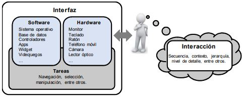

INTERACCIÓN HUMANO ORDENADOR
Pagina Facebook Universidad Unad
La Interacción Humano-Computador (IHC) es una nueva disciplina que concierne con el componente interactivo entre las aplicaciones computacionales y los usuarios, así como las consideraciones del contexto de esta interacción. Es un área multidisciplinaria donde confluyen especialistas del dominio de la aplicación que se construye, especialistas en interfaces de usuario, psicólogos cognitivos, diseñadores gráficos, educadores y el usuario, entre otros (Borchers 2000).
La IHC es un área transversal entre la ingeniería, psicología, ergonomía y diseño, que investiga la teoría, diseño, implementación y evaluación de la forma en que los seres humanos utilizan e interactúan con los dispositivos tecnológicos (Kim, 2015;Reeves, 2015).
la interacción se refiere a un modelo abstracto por el cual los seres humanos interactúan con el dispositivo para realizar una determinada tarea, mientras que una interfaz es el desarrollo de hardware o software para llevar a cabo la interacción. (figura 1).

Figura 1. Conceptos del modelo de interacción e interfaz de usuario
Fuente: Adaptado de Kim (2015).
En la actualidad, la tecnología interactiva (software y hardware), ya sean teléfonos móviles, computadoras, electrodomésticos, sistemas de navegación, sensores, entre otros, forman parte de la vida diaria, las cuales se utilizan para conectarse con amigos y familia, crear y gestionar música personal y álbumes de fotos, explorar nuevos medios de comunicación, realizar tareas a través de interfaces, entre otras actividades.Como resultado, la investigación actual se centra cada vez más en la creación de experiencias de usuario en lugar de interfaces. Este cambio de enfoque implica un salto en la conceptualización, el uso nuevas metodologías y las mejores prácticas de la HCI, como el diseño de interacción y el diseño centrado en el usuario, que se centran en la forma de diseñar la tecnología interactiva para que sea fácil de entender y agradable de usar (Dix, 2009).